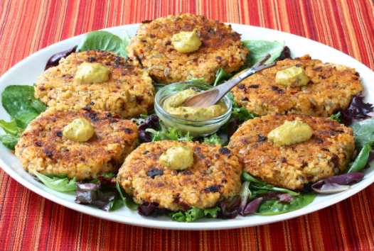

goodness
goodnessHome> NEWS & Media
RECIPES FOR THE MEDIA
Are you looking for a healthy, delicious recipe to include in your publication? Oldways can help. All of our recipes tagged “Staff Favorites” are Oldways recipes, with a hi-res photo. Contact media@oldwayspt.org for permission to reprint, appropriate credit line, and a hi-res version of the photo.
Click the link below for Oldways recipe reprinting guidelines:
We’ve posted a few samples here to whet your appetite. SEE THE REST OF OUR STAFF FAVORITES HER
FARFALLE WITH
AVOCADO SAUCE

MANHATTAN MILLET CAKES
Olways
266 Beacon Street Suite 1
Boston , MA 02116
TEL 617-421-5500
FAX 617-421-5511
info@oldwaysspt.org